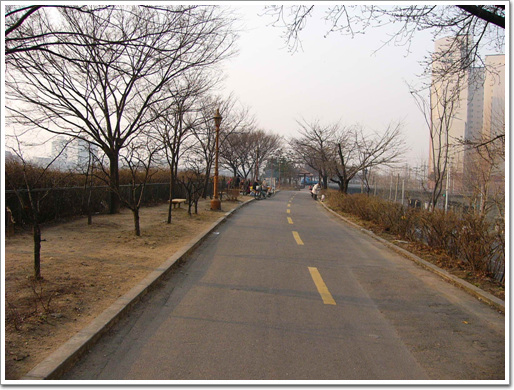
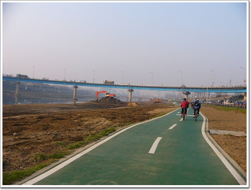
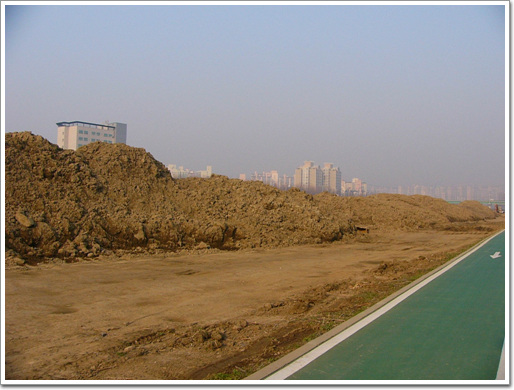
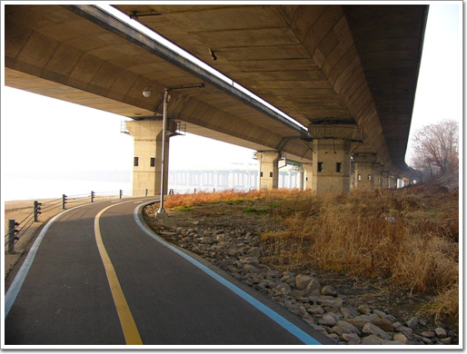
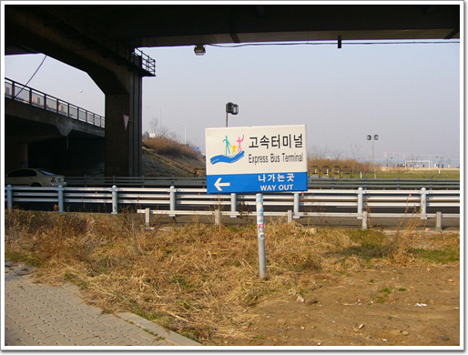
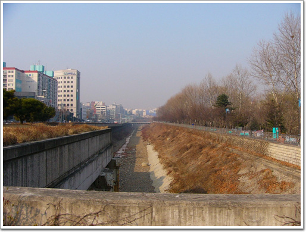

봄이다.


null
겨울동안 운동부족으로 디룩디룩 살 찐 몸을 다시 빼야겠다.
5개월만에 다시 자전거로 출퇴근 개시다.
장안동으로 다시 이사를 갔기 때문에, 장안동에서 반포동으로 출근.
코스는 포레스트가 사전 개척해 놓은 그 코스대로 간다.
- 집에서 나와, 장안동 뚝방길. 여기서부터 안전한 자전거 전용 도로다.
- 내가 다녔던 동대부중고. 담장만 변했군.

- 아침 7시 반. 황사라서 그런가 별로 운동하는 사람이 없다.
- 첫번째 다리, 장평교
- 장평교를 건너서, 군자교 사이에 중랑천변 자전거도로로 내려가는 길이 있다.
- 왼쪽으로 방향을 틀어
- 중랑천변으로 내려가기 위한 길에 들어섰다.
- 출근길이라 차는 많다.
- 이제부터 자전거 전용도로. 내려간다.
- 역시 한가하다.
- 내 자전거보다 느리게 움직이는 차들.
- 산지 5년된 내 자전거.
- 이제 군자교 밑을 지난다.

- 군자교 지나면서부터는 공사하는 장비가 보이기 시작한다.
- 동부간선도로는 중랑천을 가로지르고..
- 나는 그 밑을 통과하여 직진.
- 하수 처리장의 수문. 도로 상황이 안 좋군.
- 공사차량으로 인해, 흙먼지가 많다.
- 몇개 안되는 화장실중의 하나. 한강이나 양재천과는 달리 이 곳은 화장실이 별로 없다.

- 하천 바닥에서 파 낸 흙모래인가 보다.
- 공사차량이 빈번히 다닌다는 표시.
- 역시 자동차 도로 밑으로 자전거는 통과한다.
- 조명이 없는 토끼굴이라, 이렇게 나와야지만 빛이 들어온다.
- 토끼굴을 통해 올라가는 중.
- 동부간선 도로는 여전히 막히는군.
- 하수 처리장 위로 난 길을 통해 나는 계속 직진.
- 다운힐 코스.
- 다운힐 코스 밑은 급커브로, 여기서 속도 안 줄였다가는 쭉 튕겨져 나가게 된다
- 공사트럭이 일으키는 먼지로 잠시 숨을 멈춘다.
- 이제 청계천을 건널 차례
- 여기 도로 상황이 최악이다.
- 진흙길. 뭐 물을 뿌린 이유는 먼지 나지 말라고 뿌렸겠지만..
- 청계천을 건넜다.
- 여전히 좋지 않은 도로.
- 아침에 인라인을 타고 계시는 동네 할아버지.
- 여기 하천에도 뭔가 공사를 하고 있다.
- 왼쪽이 살곶이 다리, 앞이 한양대.
- 살곶이 다리. 이 다리를 건너면 성수동으로 갈 수 있다.
- 다음은 장안철교.
- 지하철 2호선, 성수에서 신설동을 있는 다리다.
- 장안철교를 지나..
- 여전히 인라인에서 부적합한 도로가 많다.
- 잠시 깨끗한 도로가 나온가 싶더니..
- 바로 포장이 드러난, 길이 나온다.
- 마지막 흙길.
- 중랑천 건너편 동부간선도로. 여전히 출근길 정체중.
- 이제부터 도로 상황은 좋다.
- 응봉과 바로 연결되어있는 지점.
- 서울숲 조성 하는 현장과 삼표시멘트.
- 여기는 운동하는 사람들이 있군.
- 이제부터 쾌적모드로 페달을 밟는다.
- 강북쪽 한강길은 강남쪽과 달리 폭이 좁고, 구불구불하다.
- 동호대교.
- 옥수역.
- 강변북로와 두무개길 사이를 달리는 중.
- 봄 황사로 강 넌너편이 잘 안보인다.
- 성산대교까지 14km 남았음.
- 강변북로가 햇빛이 잘 막아주고 있다.

- 강변북로 밑으로 가는 중이라, 비오는 날도 자전거타기 괜찮겠다.
- 이제 이 강변북로도 햇빛을 못 막는 지점이다.
- 한남대교.

- 교각 보수 공사중인가?
- 한남역.
- 한남역을 조금 지나니, 벙커가 있군.
- 이제 고지가 보이기 시작한다.
- 선착장.
- 햇볕이 비추니, 조금 덥다.
- 한창 공사중인 아저씨들.
- 그래도 햇볕을 정면으로 받으며 가지 않아 다행이군.
- 반포대교와 잠수교.
- 반포대교 밑은 역시 또 무슨 공사중이다.
- 잠수교로 들어서기 위해 방향을 돌린다.
- 잠수교다. 자전거 도로 개통한지는 한 1년 되었나?
- 쭉 뻗은 자전거 도로. 그런데, 지나가는 차 소리에 꽤나 시끄럽다.
- 강을 건넜다. 이제 서초구.

- 고속터미널쪽으로 이제 나가야겠다.
- 나가는 길은 이쪽 길로.
- 계단길이다. 자전거를 끌고 올라가야한다.
- 좁은 통로.
- 이제 반포동이다.
- 자전차는 차의 신호를 기다린다.
- 반포주공아파트의 쓰레기 수거장인가 보다.
- 재개발을 앞둔 반포주공 아파트.
- 서초 나무고아원 윗길로 산책로가 있는데,
- 공사중이군..

- 그래서 옆길로 간다.
- 이제 거의 다 왔다.
- 주차는 회사 지하 주차장에..
null


덧글
나하고 출퇴근하는 길이 똑같군. 중량천 공원 들어 가는 다리도 같은 다리로 들어 가네.
보고나니 벌써 7년전 포스팅이었네요^^